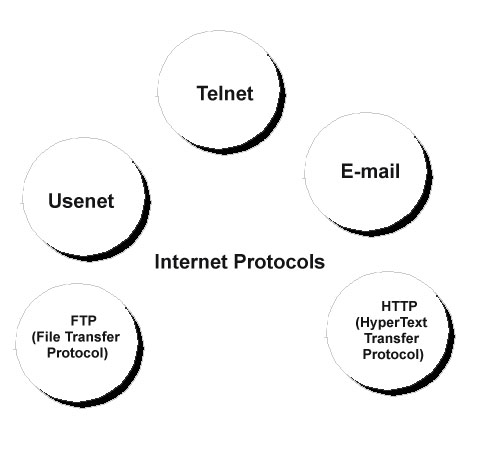

You are most likely wondering, what is this site for? Well, it is a site to help young people (like you) to use, understand and be safe on the internet.
Understanding the Internet
Introduction
The Internet is a big old complicated thing, so we need to break it down into small bites, so we can understand it as we go. These sections are to help us understand how the internet works, how it started, and where it's going.
What is the Internet, the World Wide Web and all that?
Simply put, the Internet is a "network of networks", which all communicate to allow data to travel between computers, whilst the World Wide Web is a method of accessing information over the Internet. The Web uses HTTP (Hyper Text Transfer Protocol) to transfer data. Whilst the web only uses HTTP, the Internet uses many different protocols, such as; SMTP (for eMail), FTP (for files) and USENET (for news). As you can see, the Internet is more than just the World Wide Web.
What are the common internet protocols?
Well, the most common protocol used is the "Internet Protocol Suite", otherwise known as TCP/IP. TCP/IP is the Transmission Control Protocol and Internet Protocol. It is sometimes known as the "DoD model" since it was the US Department of Defence which funded the development of TCP/IP. TCP/IP provides connections, from one end to another. To put it simply, it is the rules that the internet uses for putting addresses on letters and sending them.

There are other common protocols, of course. The most common type of internet traffic is HTTP. HTTP (Hyper Text Transfer Protocol) is the transmission of "hypermedia" information. To understand this, you need to first understand hypertext. Hypertext is words with a structure, that uses links between the different bits of text. HTTP is used to move hypertext around the internet. (It's more complex than this, but we only need a basic understanding.)
There are more. For example, FTP, or File Transfer Protocol. FTP is the protocol used to transfer files from one host to another over a network. This is often used to send files to a server, such as a web server, where people can then request them with HTTP. This is often how websites are built, with the files being written, sent with FTP, then retrieved with HTTP.
Using the Internet
A Simple Introduction
You're already using the internet. You're here, on this website, reading this page. Let's imagine that someone just gave you a piece of paper, with this site on. That smart comment wouldn't be very helpful, would it? We'll start witht the basics.
So, let's start. What do you need to use the internet?
A computer
An ISP (more on this later.)
A network connection
A web browser
Now, this sounds fairly difficult, to get all of this, but if you're determined, it's easy. If you live in Britain, and you have a library, this has all been done for you. Just speak to them, and ask if you can use the internet. But, for the purposes of this, let's assume that you don't.
What in the world is...
An ISP? A network? Some of you here will be sat here, scratching your heads. Let's break down everything above, and make it very simple.
An ISP.
An ISP is an Internet Service Provider. They are companies that connect houses and other businesses to the Internet. Nowadays they provide various packages, various speeds and data limits, as well as many providing other services, such as email. In the UK, the biggest ISP is BT, who do internet, email, phone and TV packages.
A Network.
A network is simply a connection of different computers and pieces of equipment. There are many types of network, and many different things that can be networked. They can range from a simple home network, with a computer and a modem, all the way to a school, with hundreds of computers, switches, printers and servers.
In this example, we're only going to have a simple network, a computer and a modem.
A Modem
A modem is a "modulator (mo), demodulator (dem)" It takes signals from the broadband or phone line, and turns them into signals that the computer can understand. It also takes signals from the computer, and codes them so that they can go down the phone line. They often include routers or switches.
Router / Switch
Routers and switches are very similar, so we'll go over them both, at the same time.
Routers and Switches route packets of data around the network. That's about it. They are like junctions and road signs, allowing people to drive to different places.
Web Browser
A web browser is a piece of software (a program), which takes the signals from the network going into the computer, and decode them, putting them together to form a webpage. People with Windows will have Internet Explorer on their computer, with many people using that.
text and text with words and text that are so wide that it goes all the way lorium ipsum the sly cat jumped over the lazy fox.